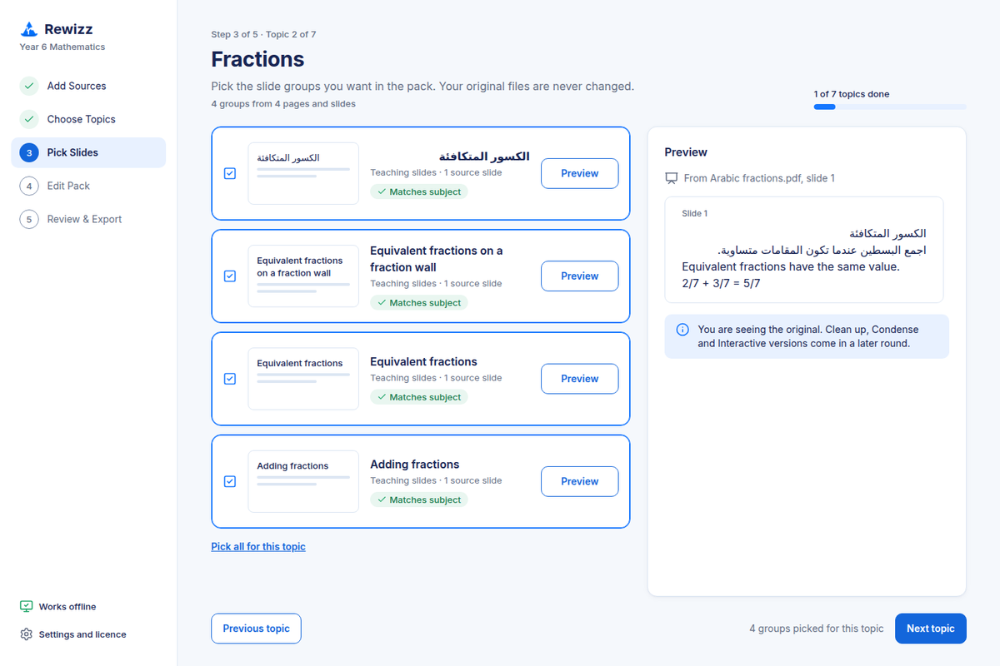
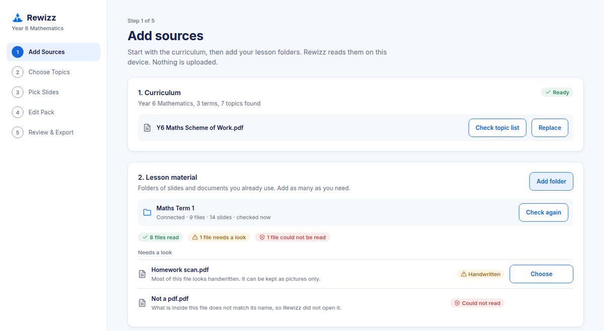
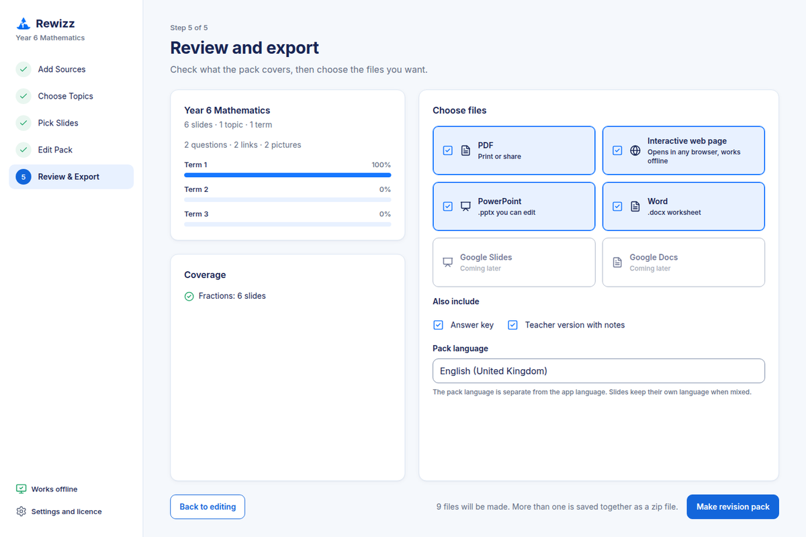

Revision packs from the lessons you already have.
Add your curriculum and your lesson files. Rewizz finds the slides for each topic. You choose what goes in, edit it and export a pack for your class.
- Your files stay on your computer
- Works offline
- English and Arabic files

Revision season starts in your old folders.
Slides from three terms ago. Worksheets saved twice. A Physics deck in the Maths folder. Rewizz reads those folders for you and sets out what fits each topic, so you start from a draft pack and not from an empty slide.
From folder to revision pack in four steps.
Rewizz works in the order you would. You stay in charge at every step.
Add your curriculum
Add the curriculum for your subject and year group. Rewizz builds the topic list from it, and you check the list.
Add your lesson files
Choose the folders of PowerPoint, Word and PDF files you already use. Rewizz reads them on your computer. Scans and handwriting are marked so you can decide what to do with them.
Pick the slides
For each topic, Rewizz groups the matching slides. Pages that look like another subject are held back for you to decide. You tick what you want.
Edit and export
Reorder slides, change the text and add questions. Export a PowerPoint, Word file, PDF or web page, with an answer key and a teacher version.


Built around how teachers work.
Your lessons are your own work. Rewizz is made to respect that.
Your files stay on your computer
Rewizz reads your files and makes your packs on your own device. We never receive them.
Works offline
After the first visit it runs without the internet, so you can plan at home, at school or on the move.
You decide
Rewizz suggests. You choose every slide in the pack. Your original files are never changed.
Your material, with its source
Packs are made from your curriculum and your lessons. Every slide shows which file and page it came from.
English and Arabic files
Rewizz reads lesson files in English and Arabic, and exports Arabic text right to left. A pack can mix both languages.
Files you can keep editing
Exports open in PowerPoint, Word and a PDF reader, and as a web page that works offline. Edit them as you would any file of your own.
Who it is for.
Class teachers, subject leads, tutors and school leaders who keep lesson material in folders and need revision packs when the term ends.
- End of term and year-end revision. Pick topics across terms and build a pack from what you already taught.
- Exam preparation. Gather the right slides for each topic in minutes, then add your own questions.
- Department packs. Give every teacher in a department the same starting point, and let each one adjust it.
- Confidential material. Lessons and school documents stay on the computer they are already on.
Help us test Rewizz.
Rewizz is in beta. We are looking for teachers in the UAE to try it with their own curriculum and lesson files, and to tell us what works and what does not.
Join the betaPlaces are limited. Press the button to email us, and we will reply with your sign-in instructions.
- Use your own curriculum and lesson files, on your own computer.
- Make a pack from the first step to the export.
- Tell us where it saves you time and where it gets in the way.
Questions teachers ask.
Short answers. If yours is not here, email us at rewizz.beta@gmail.com.
Do my lesson files leave my computer?
No. Rewizz reads your files and makes your packs on your computer. We never receive your files or your packs.
Which files can Rewizz read?
PowerPoint (.pptx and older .ppt), Word (.docx and older .doc), PDF, and photos of printed pages. Handwritten pages are marked so you can decide what to do with them.
Do I need the internet?
You need it to open Rewizz the first time and to download the matching model. After that Rewizz works offline.
Does Rewizz use AI?
Rewizz uses a small model that runs on your computer to suggest which slides belong to a topic. It only suggests. You make every decision, and nothing is sent anywhere.
Which subjects and curricula does it work with?
You add your own curriculum, so the topics match what you teach. Rewizz does not come with a fixed list of subjects.
Which computers can I use?
The beta runs in the Chrome or Edge browser on Windows, Mac and Chromebook. Desktop apps for Windows and Mac are planned.
What does it cost?
The beta is free. We will announce prices before launch.
Does Rewizz need student data?
No. Rewizz has no student accounts, marks or records. Please do not test with files that contain student names or personal details.
Can my school see my files?
No. Your files stay on your computer. A school licence lets an administrator manage seats. It gives no access to teachers' files.
Is Rewizz covered by UAE data protection law?
Rewizz keeps very little. Your files, packs and drafts stay on your computer, and we hold no lesson content or student data. This page is not legal advice or a certification. If your school needs a data protection review, ask us your questions and we will answer them.
Who makes Rewizz?
Rewizz is made by 204Labs FZE, a company in the United Arab Emirates.
How do I join the beta?
Press Join the beta and send us the email. We will reply with your sign-in instructions.
Try Rewizz on your own lessons.
Join the beta and make your first revision pack from folders you already have.
Join the beta